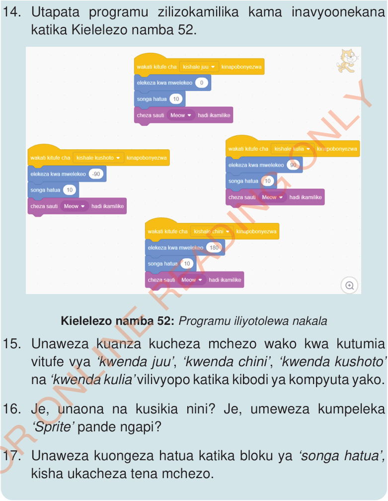

14. Utapata programu zilizokamilika kama inavyoonekana katika Kielelezo namba 52.

Kielelezo namba 52: Programu iliyotolewa nakala
15. Unaweza kuanza kucheza mchezo wako kwa kutumia vitufe vya ‘kwenda juu’, ‘kwenda chini’, ‘kwenda kushoto’ na ‘kwenda kulia’ vilivyopo katika kibodi ya kompyuta yako.
16. Je, unaona na kusikia nini?
Je, umeweza kumpeleka ‘Sprite’ pande ngapi?
17. Unaweza kuongeza hatua katika bloku ya ‘songa hatua’, kisha ukacheza tena mchezo.